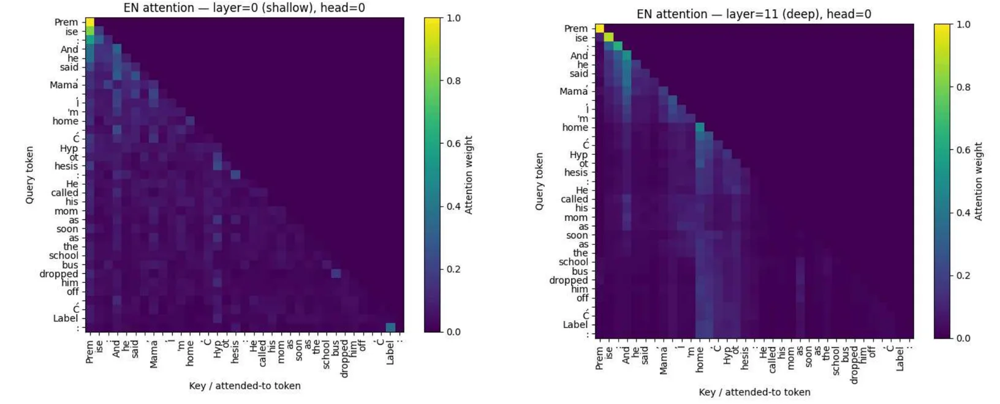

Setup
Natural language inference (NLI) asks whether a hypothesis follows from a premise, contradicts it, or is neutral, so chance is 33.3%. The group implemented GPT-2 small (attention, transformer blocks and the AdamW optimiser), framed NLI as predicting a single label token, and fine-tuned on English XNLI: 78.02% test accuracy at baseline and 82.28% after tuning. The course was taught by Prof. Wenxuan Zhang.
What I did
- Zero-shot transfer. I ran the English-tuned model on all 15 XNLI languages. English scored 78.02%, and every other language landed between 35.87% and 45.55%, barely above chance.
- Fertility as a cheap predictor. Fertility is the number of subword tokens per word. A high value means the tokenizer barely knows the language. It ranges from 1.11 for English to 9.48 for Thai, and its rank correlation with zero-shot accuracy is −0.818.
- Choosing what to fine-tune. I picked Spanish, French, German and Swahili for low fertility and higher zero-shot scores. Swahili adds a language outside the Indo-European family.
- One model per language vs one for all. I fine-tuned a separate model for each language, and a single unified model on all five languages together.
Zero-shotPer-language modelOne unified model
0204060
chance
GermanSpanishFrenchSwahili
| Language | Fertility | Zero-shot | Per-language | Unified |
|---|---|---|---|---|
| German | 2.10 | 41.52 | 63.86 | 61.45 |
| Spanish | 1.83 | 45.55 | 63.45 | 64.58 |
| French | 1.75 | 40.38 | 65.86 | 62.85 |
| Swahili | 2.08 | 38.18 | 58.03 | 56.47 |
The single unified model came within about 3 points of four separate models and beat the Spanish one (64.58% vs 63.45%), which makes it the more practical choice.
Looking inside the model
- Embeddings don't separate by language. A t-SNE of 3,000 sentence embeddings across 15 languages overlapped heavily (silhouette score 0.090).
- Attention changes with depth. Both layers attend heavily to the first token, but the deep layer adds more structured attention over content words.
- The signal is there, but prompting can't reach it. On a synthetic dataset of Singaporean-parent tone (care, disappointment, comparison and guilt), prompting GPT-2 scored 25.4%, which is chance for four classes. A linear probe on the same model's frozen embeddings scored 94.4%.

Limitations
- A pragmatic-inference probe looked fine on accuracy (0.76), but its macro-F1 was 0.47 because it almost always predicted "contradiction". Accuracy alone would have hidden this.
- The tone probe didn't transfer across languages: 97.7% in English but 25.0%, chance level, in Chinese.
- The per-language numbers are best-checkpoint accuracies from the original notebook. The cleaned re-run will report every model on the same test split.